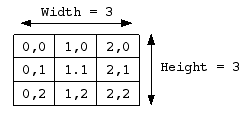

| Wave's~ BlitzMax Tutorial for NG | ~ November, 2015 ~ Version 11 |
| Beginners guide to BlitzMax | |
|
| Random |
|
A most useful command is Rand(A, B) which creates a Random value between A and B. |
| Example: |
|
Local Test = Rand(
1,3) |
This will set test to 1 or 2 or 3. If you call Rand(A) with one parameter only it'll return a value between 1 and A.
This means Rand(2) should give 1 or 2.
|
| Arrays |
|
Arrays are a way to store several variables at one place. |
|
Local NameList$[] = [
"Dawn" , "Trac" , "Fire" ,"Nitro" ,"Nex"] | |
This creates an array with 5 strings. All strings set.
|
|
Local Text$ = NameList[2] |
NameList[2] refers to element 2 of Array NameList. Arrays start at 0, so this would give us "Fire"
|
|
NameList[0] = "None" |
|
Above would set element 0 to "None" (this element was previously "Dawn")
Arrays have a great feature! |
| They can be used in Eachin-loops, so that you can retrieve each element of the array. |
For Local Name$ = EachIn NameList
'The variable "Name" will store each element of this array
Print Name 'Print each string element
Next |
Here is a sample of how to set arrays on the fly. It's a very handy way to setup arrays. |
Global Name$[] 'Declare an Array!
Print "Start Array Test ----------"
Name = ["Torm","Arth","Yire","Float","Stew","Sword","Dew","Flash","Lost","Temore"]
PrintArray(Name)
Print "---Set this Array to this instead----------------"
Name = ["Storm","Earth","Fire","Water","Moon","Sunshine"]
PrintArray(Name)
Function PrintArray(Arr$[])
For Local S2$ = EachIn Arr
If S2 <> ""
Print S2$
Next
Print "Array Length was : "+Arr.length
End Function |
| |
| Arrays with Multiple Dimensions |
|
An Array can have more than one dimension. For example Local Grid[3,3] which would create a 2D (Two Dimension) array called Grid with 3x3 integer elements. We can store 9 different variables in this array. A 2D array is like a table or matrix with rows and columns. While a 1D array would only have 1 row but several columns a 2D array has several columns and several rows. See for yourself: |
 |
This is a normal 1D array. It's length is 3, which is the number of columns. Declare it: MyArray[3] |
|  |
This is a 2D array. Declare it: Local MyArray[3,3]. To get the value of the element in the middle go, MyArray[1,1]
An element in an array can (Ex. MyArray[0,0] ) be used just as an int. Ex. MyArray[0,0] :+ 1 |
|
To access one slot in the array, A = Grid[X,Y], where X,Y is the element's position. If we want to loop thru all elements in this array we'll have to use a double For-Next loop. All elements in an Array have to be of the same type! |
Local Grid[3,3]
'Create an empty 3x3 array called Grid
For Local X = 0 To 2
For Local Y = 0 To 2
Grid[X,Y] = Rand(9) 'Sets each element to a random value from 1 to 9
Next
Next
Print "Value at Row1 Column1 = "+Grid[0,0]
Print "Value at Row1 Column2 = "+Grid[1,0]
Print "Value at Row1 Column3 = "+Grid[2,0]
Print "Value at Row2 Column1 = "+Grid[0,1]
Print "Value at Row2 Column2 = "+Grid[1,1]
Print "Value at Row2 Column3 = "+Grid[2,1]
Print "Value at Row3 Column1 = "+Grid[0,2]
Print "Value at Row3 Column2 = "+Grid[1,2]
Print "Value at Row3 Column3 = "+Grid[2,2] |
To Print the above in a more optimized form you could instead write: |
For Local X = 0 To 2
For Local Y = 0 To 2
Print Grid[X,Y]
Next
Next |
| |
| Fake multiple dimesions with arrays in arrays |
|
You cannot create multidimensional arrays with set variables, but you can use another side of arrays which mimics the same behavior. It's about creating several 1D arrays and putting them into another array; an array of arrays. |
|
Local Grid[][] = [ [1,1,1,2],[7,7],[5,5,5] ] |
|
This creates three 1D arrays, the first has length 4 the second length 2 and the third length 3.These arrays are used as columns in a bigger array. To get a element we go Grid[ WhichArray ][ PlaceInThisArray ] Example: To get the first 7 in the second array; Grid[ 1 ][ 0 ]. Remember that arrays start from 0, so 1 is the second array and 0 is the first element.Example: To get the last element in the first array; Grid[ 0 ][ 3 ]. Because Grid in the last example is an array of arrays you can access one of the arraya in Grid with just the first []. So if we want the first array: Grid[ 0 ]. |
| Example: Loop and print the first array of our Grid you could write: |
For Local n = EachIn Grid[0] 'Try changing the 0 to 1 and 2
Print n
Next |
| |
| Check length and sort |
|
I'll say it again, Arrays are objects. Therefore they may have methods. The two most useful is length and sort. In the first example about arrays add a line: NameList.Sort The array of strings will be sorted alphabetical, int/float arrays by largest value.
If you provide the argument Sort( false ) you will sort in reversed order. |
Local Test[] = [7,39,1,24,5,6,3,8,19,5,3,3,2,5,18,8,2,221,3,4,5,63,87,12,92]
Test.Sort
For Local n = EachIn Test
Print n
Next
Print "Length "+Test.length |
| |
| From Array to Slice |
There will be a time where you want a part of an array. Like the first 3 elements or the last 4. BlitzMax has a very easy and elegant solution for this called slices. A slice is a copy of a part of an array.
See the code below to figure out how it works, also check the reference. |
Local Test[] = [0,1,2,3,4,5,6,7,8,9,10,11,12,13]
Local First4[] = Test[..4] 'Get the four first elements
For Local n = EachIn First4
Print n
Next
Print "Length "+First4.length |
This can also be used directly in the EachIn-loop: |
For Local n = EachIn Test[9..] 'Get all elements from 9 to end of array
Print n
Next
Print "Length "+Test[9..].length |
To get all elements (full copy) you could go: |
For Local n = EachIn Test[0..Test.length] 'Get all elements
Print n
Next
Print "Length "+Test[0..Test.length].length
Print "Length "+Test.length |
Or you could go Test[..] which means all elements from first to last. To get the last 2 elements you could do: |
Local Last2[] = Test[Test.Length-2..] 'Get the last two elements
For Local n = EachIn Last2
Print n
Next
Print "Length "+Last2.length |
The above examples show how powerful and easy arrays are in BlitzMax. I don't use arrays for everything. This is because BMax has another way to store data. A way which is even more flexible and allows for better code and object oriented programming. You can always have arrays in your types... |
| |
| To Index | Next Page |
page 8 |